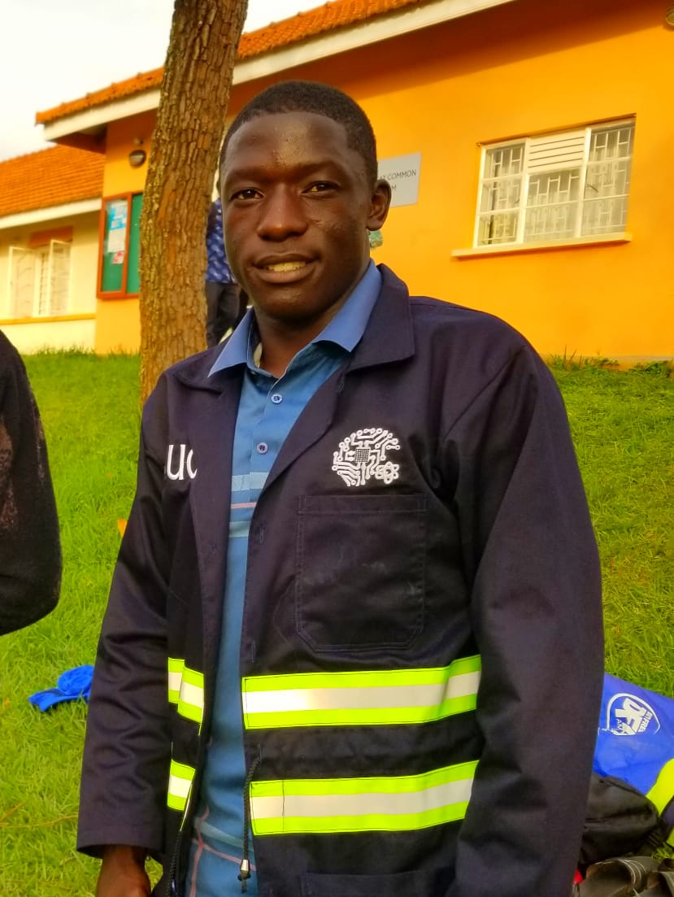
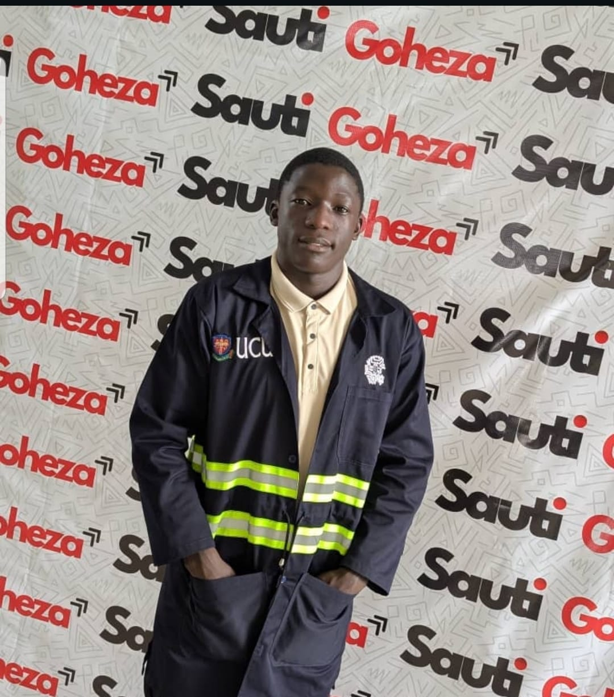
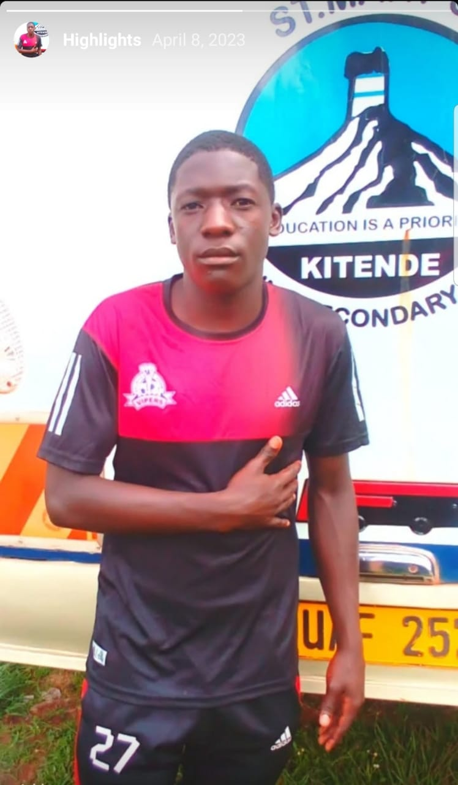

|
 |
SSEKISAMBU REAGANFrontend and Backend Developer
Phone: 0751944903 |
About | Education | Skills | Experience | Projects | Gallery | Certificates
My name is Ssekisambu Reagan. I went to John T. Miller Junior School in 2013, St. Henry's Kitovu in 2022, and Bukedea Comprehensive School from 2023 to 2024.
Outside class, I love playing football. I have played for school and university teams, including UCU, and I represented Uganda at the ISF Football World Cup in China in 2024. The game taught me teamwork, discipline, and how to stay focused.
I want to learn building useful websites and applications and to keep growing my skills on real projects.
| Year | Level | School | Details |
|---|---|---|---|
| 2023 – 2024 | High School | Bukedea Comprehensive School | Secondary education |
| 2018 | High School | St. Henry's Kitovu | Secondary education |
| 2013 | Primary | John T. Miller Junior School | Primary education |
Photos from school and campus life.
|
 Campus event (UCU) |
 School football, 2023 |
| Type | Skills |
|---|---|
| Frontend | HTML, building web pages, forms, tables, and user interfaces people can see and use |
| Backend | Server-side development, handling data, and making websites work behind the scenes |
| Soft skills | Teamwork (from football and school), communication, time management |
| Languages | English |
| Role | Place | What I did |
|---|---|---|
| Frontend and backend developer | Personal and school projects | Built websites including this portfolio and CV. Worked on both the look of the page and how the site is structured. |
| Football player | UCU, school teams, and Uganda | Play football as a striker and midfielder. Played for UCU (shirt number 16). Represented Uganda at the ISF Football World Cup in China, 2024. |